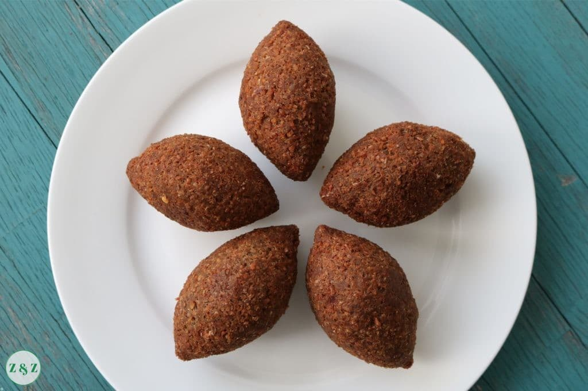

kebbeh'recipes

Description
The word kibbeh stems from an Arabic verb meaning, "to form into a ball;" so that description is not entirely
wrong. But as you'll see in today's kibbeh recipe, they're more like stuffed croquettes. There is a crispy outer
shell made with bulgur wheat, onions, and finely ground beef. The shell is then stuffed with a mixture of spiced
beef and toasted pine nuts; sealed and then fried or baked.
ingredient:
For the Kibbeh (the actual dough that forms the kibbeh shells)
- 2 ½ cups fine bulgur wheat
- Water
- 1 large onion, quartered
- 1 ½ lb lean ground beef (or lamb)
- 2 tsp ground allspice
- 1 tsp ground coriander
- ½ tsp ground cinnamon
- 1 tsp black pepper
- Pinch salt
- Oil for frying
For the Meat Filling
- Olive oil
- 1 medium yellow onion, finely chopped or grated
- 1 lb ground lamb or beef (I used beef here), cold
- ⅓ cup toasted pine nuts
- 1 tsp ground allspice
- ½ tsp ground cinnamon
- Pinch salt and pepper
steps
- Cover a fine mesh strainer with a light cloth (a cheesecloth, if you have one). Add the bulgur wheat in,
then place the strainer into a bowl filled with water. Let the fine bulgur wheat soak in the water for 15
minutes, then pull the cloth, holding the bulgur, and squeeze all the water out. You may do this a couple of
times until you are sure the bulgur is rid of water. Set aside for now.
- Now make the kibbeh (the actual dough that you will later use to form the kibbeh shells). Put the onion,
ground beef, spices and pinch of salt into the bowl of a large food processor. Process until the meat is
very finely ground almost into a paste. Transfer the meat mixture into a large bowl and add the bulgur
wheat. Use damp hands to combine the bulgur with the meat mixture to make a dough. Cover and refrigerate
until later.
- Now make the filling. Heat about 1 tablespoon olive oil in a skillet or frying pan. Saute the onion until
just golden, then add the ground beef. Cook over medium heat, stirring occasionally until the meat is fully
browned. Add the toasted pine nuts, the spices, and the salt and pepper. Stir to combine. Remove from the
heat and set aside to cool.
- Remove the kibbeh dough from the fridge.
- To stuff the kibbeh, you need to have damp hands. Place a small bowl of water next to you. Prepare a baking
sheet and line it with parchment paper.
- With both the bowl of kibbeh dough and the filling near, you can begin stuffing the kibbeh. Dampen your
hands with some water, take a handful of the kibbeh dough (about 2 tablespoon or so) and form into somewhat
of an oval-shaped disc in the palm of one hand. Use your finger to make a well in the middle of the disc,
and gradually hallow the disc out to make a larger well or hole for the filling. Using a spoon, add about 1
tablespoon of the filling. Seal the dough on top and, using both hands, carefully shape it into an oval
(football-type shape). Place the stuffed kibbeh on the baking sheet lined with parchment paper. Repeat the
stuffing steps until you run out, be sure to have damp hands throughout.
- Chill the stuffed kibbeh for 1 hour.
- Heat the oil in a deep frying pan to 350 degrees F (you'll want the oil hot enough that you can see some
gentle bubbling, but not too hot where it will burn the kibbeh shells). Deep-fry the kibbeh in the hot oil,
in batches being carefully not to crowd them, until the kibbeh shells are brown (about 5 minutes or so).
With a slotted spoon or tongs, carefully remove the kibbeh and place them on a pan lined with paper towel to
drain. Repeat until you have fried all the stuffed kibbeh.
- Serve hot or at room temprature with tahini sauce, tzatziki sauce or plain Greek yogurt. Enjoy!